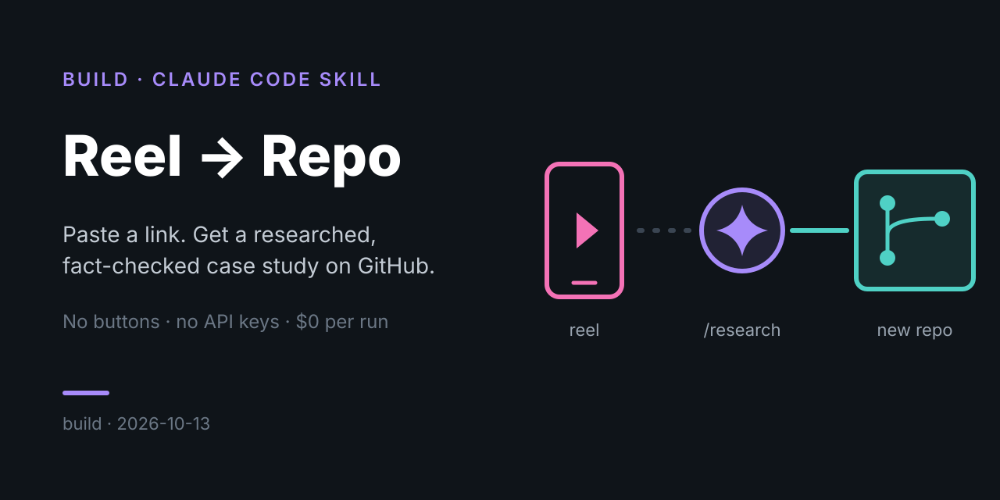

Max Sanchez
I take claims that spread online, check them against the research, and build small models in code to test them.
About
Each project starts from something small, like a viral reel, an article or a passing idea. I trace the claims back to primary sources, write up what holds and what doesn't, and build a working model or tool to test the idea. Everything is public, with code, diagrams and sources.
Experience
- CAPA · Internship2026 – present
- AIESEC · Teaching exchangeSummer 2026
Research case studies

The free massage upsell
Behavioral economics behind a viral sales tactic, with a funnel model showing who "free" attracts matters more than any in-session persuasion.

The world's #3 economy that speaks Spanish
Fact-checking a viral claim against IMF data, plus a model of the bloc and financial-advisor coverage.

Mining organic hooks for paid ads
Does reusing viral TikTok hooks in ads work? Research on reach vs. persuasion, a hook-mining script and a winner's-curse simulation.

Farm-gate cold rooms in India
India's cold-chain gap is the first mile. Unit economics of a pay-per-crate solar cold room.
Shirtsleeves to shirtsleeves
Why the Vanderbilt fortune vanished, what the "Rockefeller Waterfall" is, and how it maps to Colombian law, with a 150-year simulation. EN/ES.
The "buy Chinese stocks" thesis
Testing a viral investing thesis with real ETF data against the S&P 500.
Pairs trading research
Cointegration testing, spread z-scores and a backtest.
Tools I built

Reel → Repo
A Claude Code skill that turns a reel link into a researched, fact-checked case study with code and diagrams, published as a GitHub repo.

AEO copywriting skill
Fact-checks a popular answer-engine-optimization course and turns it into a Claude skill plus a copy linter.

Humanizer
A Claude skill and detector that strip AI-writing tells from text, with a look at why models overuse words like "delve".

Video editing skill
Cuts dead air, captions in safe zones and mixes music, by driving ffmpeg and Whisper.